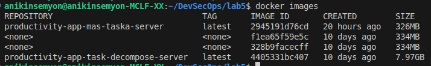
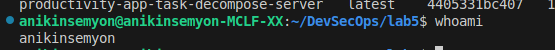
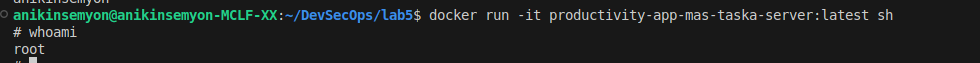
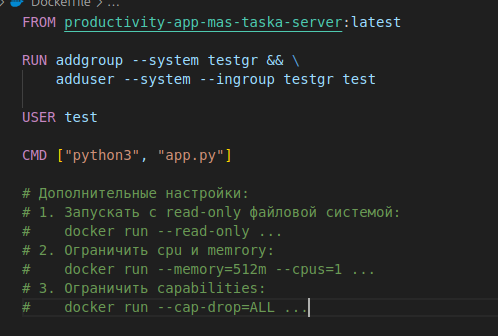
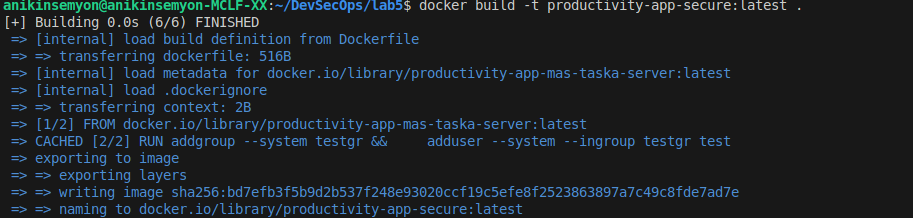
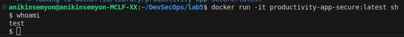
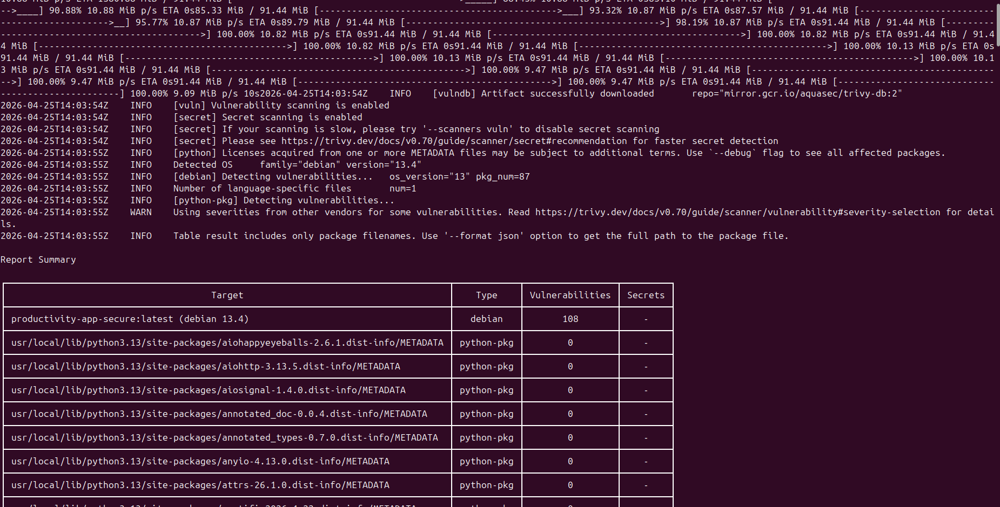
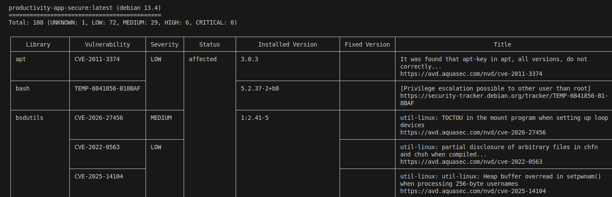
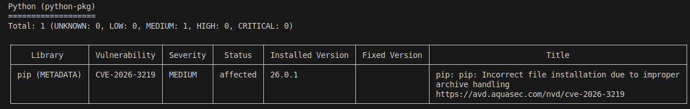

Смотрим какие есть образы командой docker images

Смотрим юзера командой whoami до захода в образ

Заходим в образ командой
docker run -it productivity-app-mas-taska-server:latest sh
и смотрим юзера командой whoami

Создадим Dockerfile на основе предыдущего образа. В нем создадим нерутового юзера test

Сбилдим новый образ
docker build -t productivity-app-secure:latest .

Заходим в образ командой
docker run -it productivity-app-secure:latest sh
и смотрим юзера командой whoami

Запускать с read-only файловой системой:
docker run --read-only ...
Ограничить cpu и memrory:
docker run --memory=512m --cpus=1 ...
Ограничить capabilities:
docker run --cap-drop=ALL ...
docker run --rm \
-v /var/run/docker.sock:/var/run/docker.sock \
aquasec/trivy image productivity-app-secure:latest



Общий результат:
Всего найдено 109 уязвимостей.
CRITICAL уязвимостей - 0.
Обнаружено 6 уязвимостей уровня HIGH.
Некоторые уязвимости высокого уровня:
libncursesw6 — CVE-2025-69720.
Уязвимость переполнения буфера может привести к выполнению произвольного кода.
libsystemd0 — CVE-2026-29111.
Выполнение произвольного кода или отказ в обслуживании через некорректный/ложный IPC
Эти уязвимости относятся не к коду приложения напрямую, а к системным пакетам базового Debian-образа.